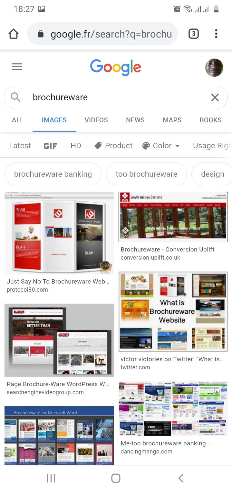

Oct 20, 2020
From brochureware to permissionware
I could say that almost 99% of websites are brochureware. They are just digital version of brochures that companies use to promote their product and services. These websites dont take the opportinity of the interactive possibilities that the internet provides to turn themselves into permissions are. Here is the real definition of a website. It is a focused permission acquisition medium. in short websites are permissionWare ( see our new internet company). Permissionware is designed to get permission from the ones we seek to serve. Step by step it asks and gets permission from its audience and gains trust by carefully valuing to the eyes and guts of the visitor the permission he or she offered. Permissionware leverage permission to get trust which leads to more sales. But sales aren’t the final goal. Permissions are intended for making change. All the steps of a permissionWare are about changes but changes acknowledged by the use of permission sweets. Marketers make Change and this one we, at permissionWare, want to make is to turn these millions of brochureware into permissions are because it makes the internet more respectful of the attention of people and trustworthy.
